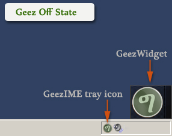
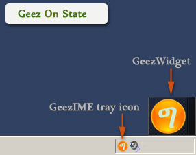
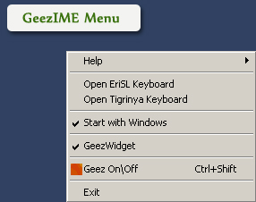
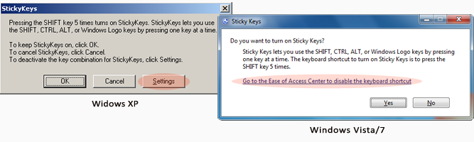
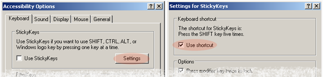
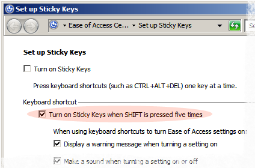

How to turn Geez On/Off
Run GeezIME using the desktop shortcut icon, or open it from the start menu or start screen in Windows 8.
Then you can use one of the following methods to turn Geez State on/off:
1. Press Control + Shift on the keyboard.
2. Double click on the Geez Widget.
3. Double click on the GeezIME taskbar icon/system tray icon.
4. Select 'Geez On\Off' from GeezIME menu.


How to play voice and Navigate around text
Press and release SHIFT Key while GeezIME is turned on, and the previously typed character will be uttered.GeezIME also has a voice supported basic backward and forward text navigation feature, which lets you move around a considerable amount of the most recently outputted text. That is, you can navigate backward/forward around the text using Left/Right arrow keys, respectively; and hence, spell out the characters or even modify, remove, add new text and finally navigate back and continue. All these can be done without losing the voice support, provided the conditions listed below are met.
Basically, navigating around and reading text on screen is not a feature of input method editors but that of specialized accessibility programs known as Screen Readers. Whereas GeezIME is an input method editor, not a screen reader, the text navigation feature here in GeezIME is not at all meant to be a complete text reading service, but rather to provide some assistance to the visually impaired people in giving them perception of the Geez text being worked on and enhance their capacity to edit that text.
Here are the conditions for a successful text navigation: the user can move around the text using the Left/Right arrow keys only, not the mouse and not even UP/DOWN cursor keys, because the effect of the latter actions is unpredictable from the point of view of an input method editor, therefore GeezIME will simply cancel voice assistance as a consequence of such actions.
Text that can be navigated include all Geez and English letters, numbers, symbols, Space, Tab, new lines(Enter key). In addition, the navigation service also allows use of SHIFT, Caps Lock, Num-Lock, BACKSPACE, DELETE and CONTROL Keys. However, voice assistance will be canceled or should not be considered accurate after the use of such keys as ALT, ESCAPE, Function Keys(F1-F12), HOME, END, INSERT, PAGEUP, PAGEDOWN, UP/DOWN arrow keys, in general, keys with special meanings will cancel voice support.
How to show/hide the Geez widget
Right-click on tray icon or GeezWidget itself, then, select
'GeezWidget' from the menu.

How to make GeezIME start with Windows
Right-click on the GeezIME tray icon or Geez Widget and click
'Start with Windows' to make sure it is checked.
The same procedure is used to turn off the feature.
Setting this feature allows GeezIME to start automatically
every time Windows starts. This is a recommended setting
if you use Geez quite often. Otherwise the application can
always be started from the icon on Desktop or using the programs menu when the need arises.
How to close/exit GeezIME
There is only one way to close GeezIME:
Right click on the GeezIME tray icon or Geez Widget and select 'Exit' from the menu.
The Sticky Key situation
Based on default configuration of the Windows operating system, if the Shift key is pressed 5 times, a prompt shows up asking whether to turn on the Sticky keys feature, as show in the picture below.

The sticky keys feature lets you use the SHIFT, CONTROL, ALT or WINDOWS Logo keys by pressing one at a time instead of holding them down as usual. But this prompt can be disturbing if you would like to use the voice feature of GeezIME which also uses the Shift key to utter characters.
The following steps can be used to disable this shortcut, and hence, the prompt will not appear next time you press Shift key 5 times.
In Windows XP:
In the prompt shown above click the Settings button, then you will see the following window, again click Settings button and in the new window uncheck the "Use shortcut" option.

In Windows Vista/7:
In the prompt shown above, click "Go to the Ease of Access Center to disable the keyboard shortcut". This will open a window show below, in this window find and uncheck "Turn on Sticky Keys when SHIFT is pressed five times" option.

The changes made here can be reverted back to their old state by exploring to the respective windows using the control panel.
|